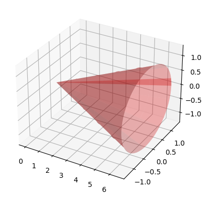

5.6. Integration in Python#
In this section we will learn how to integrate with SymPy and how to approximate definite integrals using NumPy and SciPy.
5.6.1. Integration with SymPy#
To compute the exact integral of a function using SymPy, we use the integrate function. For example, to compute an antiderivative of \(\sin(x)\), we write
import sympy as sp
x = sp.symbols('x')
f = sp.sin(x)
I = sp.integrate(f,x)
print('An antiderivative of ',f, ' is = ',I)
An antiderivative of sin(x) is = -cos(x)
To compute the definite integral \(\displaystyle\int_0^\pi\sin(x)\,dx\), we write
import sympy as sp
x = sp.symbols('x')
f = sp.sin(x)
Idef = sp.integrate(f,(x,0,sp.pi))
print('The integral of ',f, ' entre 0 y pi is = ',Idef)
The integral of sin(x) entre 0 y pi is = 2
SymPy is not always able to compute an antiderivative. If it cannot do so, it returns the original integral as output:
I = sp.integrate(sp.sin(x*sp.cos(x)),x)
print(I)
Integral(sin(x*cos(x)), x)
It is possible to compute some improper integrals, when the integration limits are \(-\infty\) and/or \(+\infty\), that is, integrals of the form:
x = sp.symbols('x')
f = sp.exp(x)
I1 = sp.integrate(f,(x,-sp.oo,0))
print('Integral de ',f,' entre -oo y 0 is = ',I1)
g = 1/(x**2)
I2 = sp.integrate(g,(x,1,sp.oo))
print('Integral de ',g,' entre 1 y +oo is = ',I2)
Integral de exp(x) entre -oo y 0 is = 1
Integral de x**(-2) entre 1 y +oo is = 1
If we need to compute an improper integral of the second kind, such as, for example,
and we do:
h = 1/x
I2e = sp.integrate(h,(x,-1,2))
print('The integral equals = ', I2e)
The integral equals = nan
In this case, to understand what is happening, it is better to use the definition:
where
and
h = 1/x
a,b = sp.symbols('a:b', real=True)
L1 = sp.limit(sp.integrate(h,(x,-1,b)),b,0,'-')
L2 = sp.limit(sp.integrate(h,(x,a,2)),a,0,'+')
print('Value of the first limit = ', L1)
print('Value of the second limit = ', L2)
print('The improper integral is = ',L1+L2)
Value of the first limit = -oo
Value of the second limit = oo
The improper integral is = nan
5.6.2. Numerical integration. Simple formulas#
As we have seen, it is not always possible to compute the integral of a function exactly using SymPy. It may also happen that the expression for the antiderivative is too costly to evaluate, or that we know the values of the function only on a finite set of points. In these cases, numerical integration techniques are used.
Next we import the necessary modules.
import sympy as sp
import numpy as np
import matplotlib.pyplot as plt
In Section Numerical integration we saw several numerical integration formulas for approximating an integral of the form
where \(a\) and \(b\) are real numbers. Specifically, we saw the midpoint, trapezoidal, and Simpson formulas.
We are going to approximate the integral
using different quadrature formulas.
Recall that, in this simple case, we can know the exact value of the integral:
x = sp.Symbol('x', real = True)
# Midpoint approximation
a = 0
b = 3
pm = (a+b)/2
f_exp = x**4+1
f = sp.lambdify(x,f_exp)
fpm = f(pm)
I_aprox = (b-a) * fpm
print('Approximate value of I using the midpoint formula = ', I_aprox)
Approximate value of I using the midpoint formula = 18.1875
We next implement a function for the simple trapezoidal rule:
def trapecio(a,b,fa,fb):
aprox_tr = (b-a) * (fa + fb)/2
return aprox_tr
We use it to approximate \(I\):
x = sp.Symbol('x', real = True)
a = 0
b = 3
f_exp = x**4+1
f = sp.lambdify(x,f_exp)
fa = f(a)
fb = f(b)
aproximacion_trapecio = trapecio(a,b,fa,fb)
print('Approximate value of the integral by the simple trapezoidal rule = ', aproximacion_trapecio)
Approximate value of the integral by the simple trapezoidal rule = 124.5
5.6.3. Exercise 1#
Implement a function that approximates the definite integral of a given function \(f\) on an interval \([a,b]\) using Simpson’s formula:
Use it to approximate the value of \(I\).
# Write your code here
5.6.4. Numerical integration. Composite formulas#
As you may have seen in the previous sections, simple formulas can give rather… dreadful results.
To obtain a better approximation, one usually uses composite formulas, as we already mentioned in Section Numerical integration. We will now implement these formulas efficiently using the np.sum function.
x = sp.Symbol('x', real = True)
f_exp = x**4+1
f = sp.lambdify(x,f_exp)
a = 0; b = 3
n = 100
x1 = np.linspace(a,b,n+1) # here we store the x_{i}.
# Remember that, in Python, we store x1[0], x1[1], ..., x1[(n+1)-1] = x1[n]
y1 = f(x1)
h = (b-a)/n # the length of each subinterval
aprox_trap = h/2 * (y1[0]+2*np.sum(y1[1:n])+y1[n])
aprox_medio = 2*h * np.sum(y1[1:n:2])
aprox_simpson = 2*h/6 * (y1[0] + 4*np.sum(y1[1:n:2])+2*np.sum(y1[2:n-1:2])+y1[n])
print('aprox_trap: ',aprox_trap)
print('approx_midpoint: ',aprox_medio)
print('aprox_simpson: ',aprox_simpson)
print('Exact: ',b**5/5+b)
aprox_trap: 51.608099919
approx_midpoint: 51.583801133999984
aprox_simpson: 51.60000032399999
Exact: 51.6
5.6.5. Exercise 2#
Write two functions implementing the composite trapezoidal rule:
A first function that performs the calculation with
np.sum, as in the code above.A second function that does the same but with an accumulated summation (it will be less efficient).
# Your code here
5.6.6. Exercise 3#
To obtain the volume of a right circular cone of height \(h\) and base radius \(R\), one can rotate the line passing through the origin and the point \((h,R)\) around the \(x\)-axis between \(x=0\) and \(x=h\).
We now represent a right circular cone of height \(h=10\) and base radius \(R=2\):
import matplotlib.pyplot as plt
import mpl_toolkits.mplot3d.axes3d as axes3d
fig = plt.figure()
ax = fig.add_subplot(1, 1, 1, projection='3d')
RR = 2.0
hh = 10.0
u = np.linspace(0, 6.5, 60)
v = np.linspace(0, 6.5, 60)
U, V = np.meshgrid(u, v)
X = U
Y1 = RR/hh*U*np.cos(V)
Z1 = RR/hh*U*np.sin(V)
ax.plot_surface(X, Y1, Z1, alpha=0.3, color='red', rstride=6, cstride=12)
plt.show()

Prepare code that, using the
sp.integratefunction, computes the volume of a cone of height \(h\) and base radius \(R\).For the cone in the previous figure (\(h=10\), \(R=2\)), approximate this volume using the composite midpoint, trapezoidal, and Simpson rules with \(n=1000\).
# Your code here